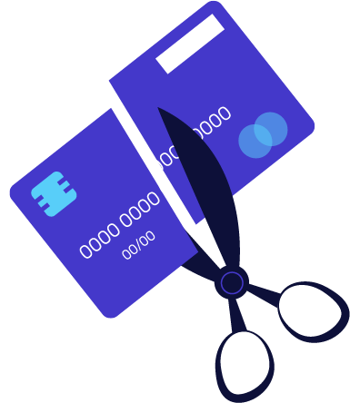
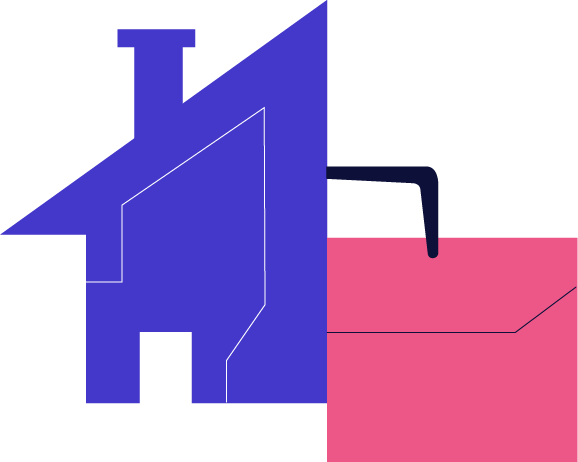
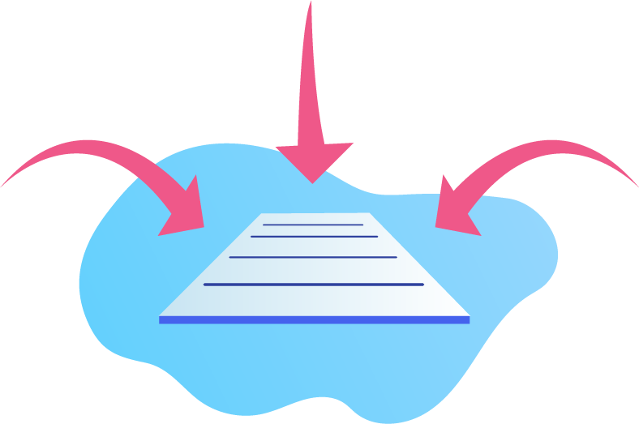

الحياة مليئة بالمنعطفات والتحولات غير المتوقّعة الناتجة عن المشاكل المالية التي تمتلك تأثيراً كبيراً على حياتنا واستقرارنا. ولكن إذا كنت تتبع خطة توفير جادة، فلن تواجهك أي من تلك المشاكل. لذلك، تشجع وزارة المالية جميع المواطنين والمقيمين على الادخار وتحمل المسؤولية في كيفية إنفاقهم لدخلهم حتى ينعموا بأسلوب معيشي مريح وضمان مستقبل آمن لهم ولأسرهم.
نصائح لتحقيق الحرية المالية
 |
 | |||
| 1 | 2 | 3 | 4 | 5 |
| كن ممتناً وسعيداً بما تمتلك ولا تحصر ذلك بالمقتنيات المادية فقط | ضع ميزانية شهرية لنفقاتك والتزم بها | تحلَّ بالصبر وادخر لتوفير ثمن الأشياء التي تحتاجها بالفعل | ابذل قصارى جهدك لتبتعد عن القروض بكافة أشكالها | أنشىء محفظة استثمارية متوازنة |
التخطيط المالي السليم وأهمية التوفير
عندما تتحكم بإدارة دخلك، فإن الحياة تصبح أسهل وستتمكن من توجيه طاقاتك لما يجلب لك ولعائلتك السعادة دائماً ما يكون هناك أعذار لعدم التوفير، ولكن احذر من ذلك، لأن الفشل في الادخار يصبح في المستقبل مصدراً للقلق والضغط النفسي. وبدلاً من اختلاق الأعذار والتطلع لامتلاك أشياء تريدها لكنك لا تحتاجها، عليك أن تضع قائمة بالأهداف التي ستأخذك أنت وعائلتك إلى الوجهة التي ستشعر فيها بالأمان والتي تستحقها أنت وعائلتك. وهكذا عندما تدخر اليوم، فإن ذلك:
-
يساعدك على التحكم في أموالك
-
يمنحك راحة نفسية لا متناهية
-
يفتح لك أبواب الفرص والخيارات
-
يساعدك على تحقيق أهدافك في الحياة
-
يُسَهّل عليك تراكم المبالغ على مدار السنوات
المعادلة 20/30/50
تعد هذه المعادلة البسيطة إحدى الطرق المعروفة لتقسيم الدخل الشهري (النقود المتوفرة التي يمكنك إنفاقها) وتخصيصها في ثلاثة فئات رئيسية، يمكنك ضبط النسبة كي تتوافق مع احتياجاتك وأهدافك:
|  |
50%لاحتياجاتك |
النفقات المعيشية الشهرية مثل الإيجار، ومشتريات السوبرماركت، والخدمات العامة. مدفوعات الديون البسيطة تندرج ضمن هذه الفئة (مثل بطاقة الائتمان الخاصة بك أو الأموال المصروفة على أقساط السيارة). |
30%مباهج الحياة |
هاتف متحرك جديد، أو عشاء في الخارج، فأنت تستحق الاستمتاع بمباهج الحياة الجميلة طالما أنك تستطيع تحمل تكاليفها. | |
20%للادخار |
مخصصات شهرية للديون، أو حالات الطوارئ أو المساهمة في صندوق استثماري. |
الميزانية الأساسية.. كن المسؤول الوحيد عن نفقاتك!
الميزانية تتيح لك إدارة أموالك بفعالية بدلاً من تبذيرها من دون سبب وجيه
إن أفضل نصيحة يمكن أن تتبعها للادخار هي إعداد ميزانية والالتزام بها؛ ولكن كيف يمكنك تطبيق ذلك؟
أولاً، أنشئ خطة ميزانيتك الشهرية
لقد سهّلنا لك مهمة البدء بادخار الأموال من خلال استخدام هذه الخطة الشهرية البسيطة القابلة للتعديل التي تم إعدادها على صفحة إكسل. ما عليك سوى النقر على التنزيل الآمن للملف (بحجم 500 كيلوبايت تقريباً) لنظامك وتعديل الفئات بالطريقة التي تناسب أهدافك.
تتكون الميزانية الأساسية من فئات مختلفة، وتحدد كل فئة الدفعة التي يجب أن تقوم بها خلال الشهر (احتياجاتك) وما تحب أن تقوم به (مباهج الحياة) وكذلك المدفوعات المخصصة لما تأمل أن تنفقه في المستقبل (مدخراتك). ويمكنك أيضاً إضافة فئة مخصصة للنقود التي ترغب بالتبرع بها (العطاء الخيري).. ابدأ بتحديد نفقات احتياجاتك ومدخراتك ثم قم بتوزيع ما تبقى من المال بشكل متوزان على جميع الفئات الأخرى.
|  |
حدد دخلك | بما في ذلك راتبك الشهري أو الأسبوعي وأي دخل آخر قد تتلقاه من الفوائد أو الأعمال الإضافية، حتى الهدايا النقدية أو قيمة الأشياء التي قمت ببيعها. |
ضع قائمة بجميع نفقاتك |
يمكنك تقسيم مصروفاتك إلى فئات (مثل فواتير العائلة، الأطفال، التأمينات)، وتصبح بعض هذه التكاليف ثابتة (مثل أقساط المدارس وأقساط السيارة، إلخ)، في حين يكون البعض الآخر قابل للتغيير (مثل نفقات البقالة والأنشطة الترفيهية). | |
ادفع لنفسك أولاً |
وهذا يعني أن تضع المبلغ المخصص لمدخراتك جانباً، وقد تشمل هذه المدخرات سداد ديون إضافية، مدخرات صندوق الطوارئ أو الاستثمارات طويلة المدى. | |
حقق التوازن |
إذا كنت محظوظاً وتبقى لك بعض النقود من دخلك بعد تحديد المبالغ لجميع نفقاتك، عليك أن تحدد كيفية إنفاق كل درهم إضافي بفعالية تامة (حيث يمكنك استخدامها لزيادة مدخراتك أو لشراء أشياء قيّمة تحتاجها). |